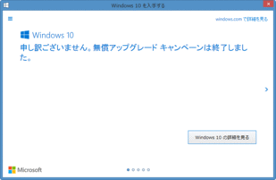

Windows 10の無償アップグレードキャンペーン、日本時間7月30日18時59分で終了 91
ストーリー by headless
最終 部門より
最終 部門より
1年間続いたWindows 10の無償アップグレードキャンペーンが日本時間7月30日18時59分に終了する。
Windowsのタイムゾーンが日本に設定されている場合、「Windows 10を入手する」アプリ(GWX)では既に無償アップグレードキャンペーンが終了したと表示され、アップグレードを開始することはできなくなっている。ただし、Microsoftのキャンペーンページからアップグレードツール「Windows 10アップグレードアシスタント」を実行すれば、18時59分まではアップグレードを開始できる。また、タイムゾーンをハワイ(UTC-10)に変更することで、GWXでは現地時刻29日23時59分59秒(日本時間の18時59分59秒)までアップグレードを開始できるようだ。キャンペーンページのカウントダウンとGWXのカウントダウンは59秒の差がある。
なお、無償アップグレードはキャンペーン終了時刻までに完了している必要があるとMicrosoftのサポートページに記載されている。アップグレード完了はWindows 10のようこそ画面が表示された時点となっているため、18時59分に開始したのでは間に合わない。ただし、アップグレードアシスタントではアップグレード開始前に対象製品がライセンス認証されているかどうかをチェックするため、実際にキャンペーン終了時刻を過ぎてアップグレードが完了した場合、どのような結果になるのかは不明だ。
ちなみに、MicrosoftストアでのWindows 10 Homeの価格は19,008円、Windows 10 Proの価格は27,864円 (いずれも税込)となっている。
このほか、Microsoftではユーザー支援技術を使用しているユーザーに対しては7月29日以降も引き続き無償アップデートを提供する計画を明らかにしていたが、wafsd のタレこみによると29日に特設ページが公開されたようだ。
Windowsのタイムゾーンが日本に設定されている場合、「Windows 10を入手する」アプリ(GWX)では既に無償アップグレードキャンペーンが終了したと表示され、アップグレードを開始することはできなくなっている。ただし、Microsoftのキャンペーンページからアップグレードツール「Windows 10アップグレードアシスタント」を実行すれば、18時59分まではアップグレードを開始できる。また、タイムゾーンをハワイ(UTC-10)に変更することで、GWXでは現地時刻29日23時59分59秒(日本時間の18時59分59秒)までアップグレードを開始できるようだ。キャンペーンページのカウントダウンとGWXのカウントダウンは59秒の差がある。
なお、無償アップグレードはキャンペーン終了時刻までに完了している必要があるとMicrosoftのサポートページに記載されている。アップグレード完了はWindows 10のようこそ画面が表示された時点となっているため、18時59分に開始したのでは間に合わない。ただし、アップグレードアシスタントではアップグレード開始前に対象製品がライセンス認証されているかどうかをチェックするため、実際にキャンペーン終了時刻を過ぎてアップグレードが完了した場合、どのような結果になるのかは不明だ。
ちなみに、MicrosoftストアでのWindows 10 Homeの価格は19,008円、Windows 10 Proの価格は27,864円 (いずれも税込)となっている。
このほか、Microsoftではユーザー支援技術を使用しているユーザーに対しては7月29日以降も引き続き無償アップデートを提供する計画を明らかにしていたが、wafsd のタレこみによると29日に特設ページが公開されたようだ。

通知領域のGWXアイコンは、今後提供される更新プログラムにより表示されなくなるとのこと
{kind=link}
あのGWXが最後のキャンペーンとは思えない。 (スコア:2)
あのGWXが最後のキャンペーンとは思えない。
もしWindows7が続けて使われるとしたら、あのGWXの同類が
またWindowsUpdateの何処かに現れて来るかも知れない・・・